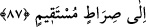

Gaybdan ilk ortaya çıkan şey
Onun canının nuru idi hiç şüphesiz
Ondan sonra o mutlak nur sancak çekti
Arş, kürsi, levh ve kalem çıktı ortaya
Onun temiz nurundan bir alem, onun ilmidir
Bir diğer alem Âdem’in zürriyetidir
el-Yesa (a.s.), Acûz oğlu Uhtub oğlu el-Yesa’dır. İsminin başındaki “elif lam” zâiddir.
Çünkü Arapça’ya sonradan girmiş bir isimdir.
Yunus (a.s.), Metta’nın oğludur.
Lût (a.s.) ise İbrahim (a.s.)’ın kardeşinin oğlu olan Hârân’ın oğludur.
“Hepsini âlemlere üstün kıldık.” Bunlardan bir kısmını değil, hepsini peygamber
oldukları asırdaki âlemlere üstün kıldık.
87. Onların babalarından, çocuklarından ve kardeşlerinden bazılarına da (üstün
meziyetler verdik). Onları seçkin kıldık ve doğru yola ilettik.
Zikredilen peygamberlerden bazılarının babalarını da faziletli kıldık. Âdem, Şit ve
İdris (aleyhimüsselam) gibi. Peygamberlerin babalarından peygamber olmayan, üstün
kılınmayan ve erdirilmeyenler de vardır.
“çocuklarından” Yani onların çocuklarından bazısını, bazısından faziletli kıldık.
Yakub (a.s.)’ın çocukları gibi.
Haddâdî tefsirinde belirttiği gibi, “çocuklarından” ifadesine, Hz. Muhammed (s.a.)
de dahildir.
Âyette peygamberlerin bazılarının çocukları kastedilmiştir. Çünkü, Îsâ ve Yahya
(aleyhimesselam)ın çocukları yoktu. Peygamberlerden bazılarının çocukları da kâfir idi.
“Ve kardeşlerinden bazılarını da” faziletli kıldık. Kendi asırlarında Yûsuf (a.s.)’ın
kardeşleri gibi. Yahut da “kardeşlerinden” ifadesi ile onlarla beraber îman eden din
kardeşlerinin kastedildiği de söylenebilir. Çünkü onlardan her biri îman etmiş, İslâm
dairesine girmişlerdir.
“Onları seçtik ve doğru yola ilettik.” Onlara doğru yolu gösterdik. O yola giren bir
daha sapıtmaz.